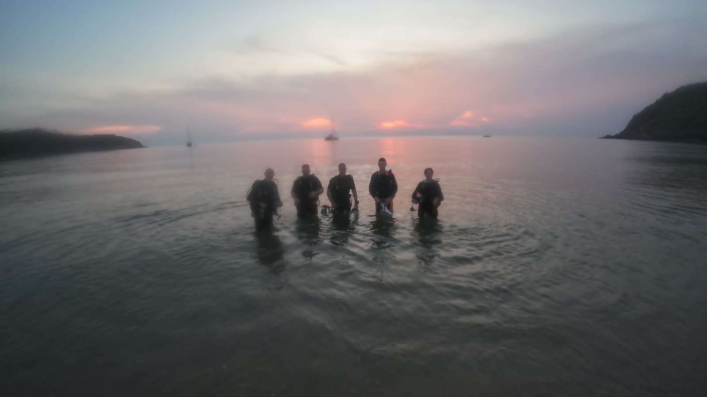
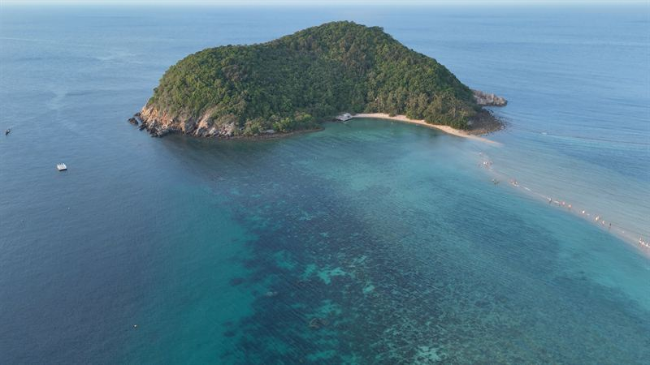
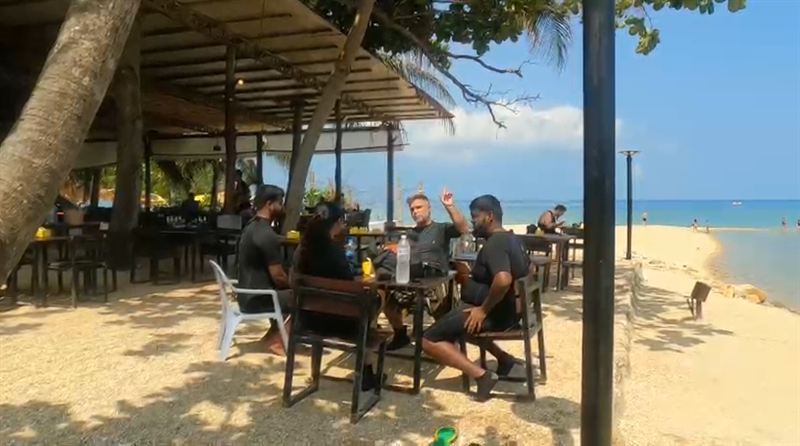

Théorie et techniques
Théorie du sauvetage, puis chaque technique pratiquée en milieu protégé jusqu'à ce qu'elle devienne naturelle.

Accueil / Formations SSI / Rescue Diver
La formation qui change votre façon de plonger avec les autres. Deux jours pour apprendre à prévenir les problèmes, les repérer tôt et les gérer quand ils arrivent, en eau calme et jamais au-delà de 9 mètres. 11,600฿.

Koh Ma · calme, peu profond, sans courant
En bref
Le Rescue Diver, c'est veiller sur les personnes avec qui vous plongez : repérer le stress avant qu'il ne devienne panique, retrouver un plongeur disparu, et remonter un plongeur inconscient en surface puis le sortir de l'eau en sécurité.
Déroulement de la formation
Le premier jour, on construit les techniques une à une. Le second, on les réunit dans des scénarios réalistes à Koh Ma, un jardin de corail calme à dix minutes de Chaloklum.
Théorie du sauvetage, puis chaque technique pratiquée en milieu protégé jusqu'à ce qu'elle devienne naturelle.
Repérer un plongeur stressé, le calmer et l'aider, en surface et sous l'eau.
Organiser une recherche pour retrouver un plongeur qui a perdu le groupe.
Remonter un plongeur inconscient en surface, lui insuffler de l'air et le sortir de l'eau.
Un examen écrit pour revoir les dernières questions ; facultatif si vous avez déjà réussi l'examen en ligne.

Déjeuner à Koh Ma entre les séances
Notre façon d'enseigner
Les exercices de sauvetage ne servent que s'ils semblent réels, et ne sont responsables que s'ils sont sûrs. C'est pourquoi tous les exercices se font à 9 mètres maximum, dans l'eau calme de Koh Ma.
Le deuxième jour mêle théorie, pratique et un vrai déjeuner au restaurant, avec le temps de débriefer chaque scénario avant le suivant.
Pour qui
Pas encore de formation aux premiers secours ? Nous proposons le SSI React Right au centre : premiers secours, administration d'oxygène et RCP en deux heures environ, pour 4,300฿. Vous ne savez pas si votre formation est valable ? Envoyez-nous une photo du certificat sur WhatsApp.
Questions
11,600฿ par personne, avec votre instructeur SSI, tout l'équipement, le déjeuner du deuxième jour et votre certification.
Deux jours : théorie et exercices en milieu protégé le premier jour, et trois scénarios de sauvetage à Koh Ma le second.
Une certification Open Water Diver, plus la spécialité SSI React Right ou la preuve d'une formation aux premiers secours et à l'administration d'oxygène dans les deux dernières années. L'âge minimum est de 12 ans.
Oui. Nous enseignons le SSI React Right au centre en deux heures environ, pour 4,300฿. Il couvre les premiers secours, l'administration d'oxygène et la RCP, et vous pouvez le faire la veille de votre formation Rescue.
Jamais au-delà de 9 mètres. Les scénarios ont lieu dans l'eau calme et sans courant de Koh Ma.
Trois séances : gérer un plongeur stressé et assister un autre plongeur, rechercher un plongeur disparu, et remonter un plongeur inconscient en surface puis le sortir de l'eau.
Oui. À la fin, nous faisons un examen écrit au centre pour revoir les dernières questions. Si vous avez déjà réussi l'examen en ligne et préférez ne pas le refaire sur papier, ce n'est pas obligatoire.
Envoyez-nous vos dates et une photo de votre certificat de premiers secours sur WhatsApp, et nous vous confirmons votre place.
Découvrez aussi nos formations Deep et Nitrox ou toutes nos formations.